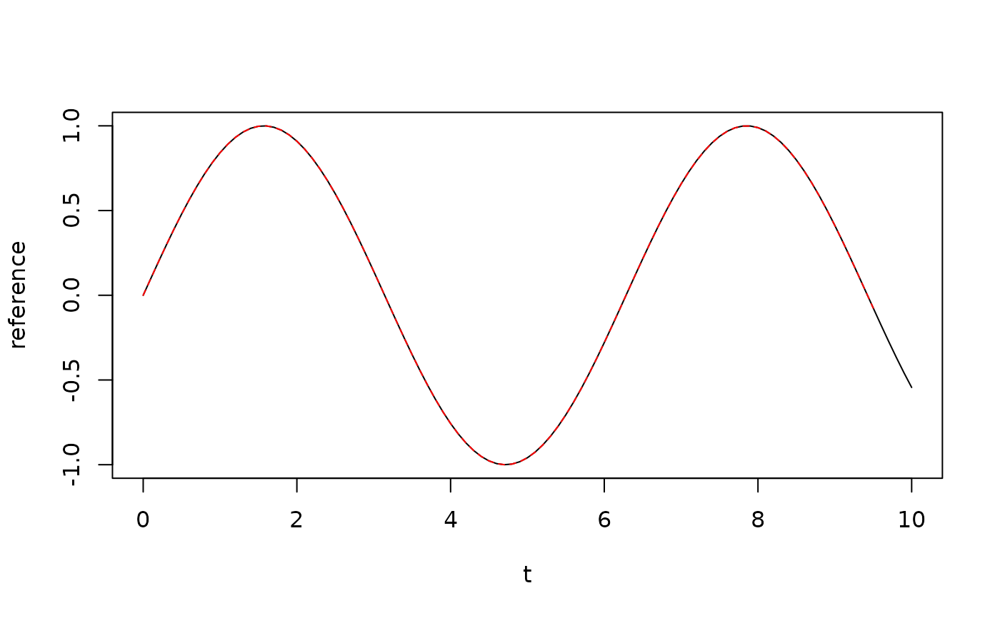

Align a time series with a reference series using cross-correlation
Source:R/align_timeseries.R
align_timeseries.RdThis function aligns two time series by shifting one series relative to the
reference based on their cross-correlation. It first finds the optimal lag
using find_lag, then applies the shift by padding with NA values
as needed.
Arguments
- signal
Time series to align (numeric vector)
- reference
Reference time series to align against (numeric vector)
- max_lag
Maximum lag to consider in both directions, in number of samples. If NULL, uses (length of series - 1)
- normalize
Logical; if TRUE, z-score normalizes both series before computing cross-correlation (recommended for series with different scales)
Value
A numeric vector of the same length as the input signal, shifted to align with the reference series. NA values are used to pad the beginning or end depending on the direction of the shift.
Examples
# Create two artificially shifted sine waves
t <- seq(0, 10, 0.1)
reference <- sin(t)
signal <- sin(t - 0.5) # Signal delayed by 0.5 units
# Align the delayed signal with the reference
aligned <- align_timeseries(signal, reference)
# Plot to verify alignment
plot(t, reference, type = "l", col = "black")
lines(t, aligned, col = "red", lty = 2)
